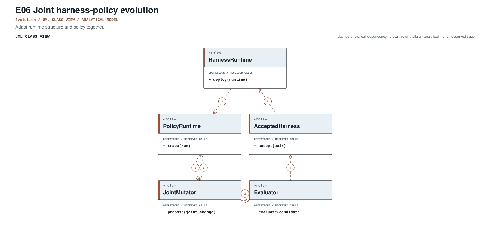
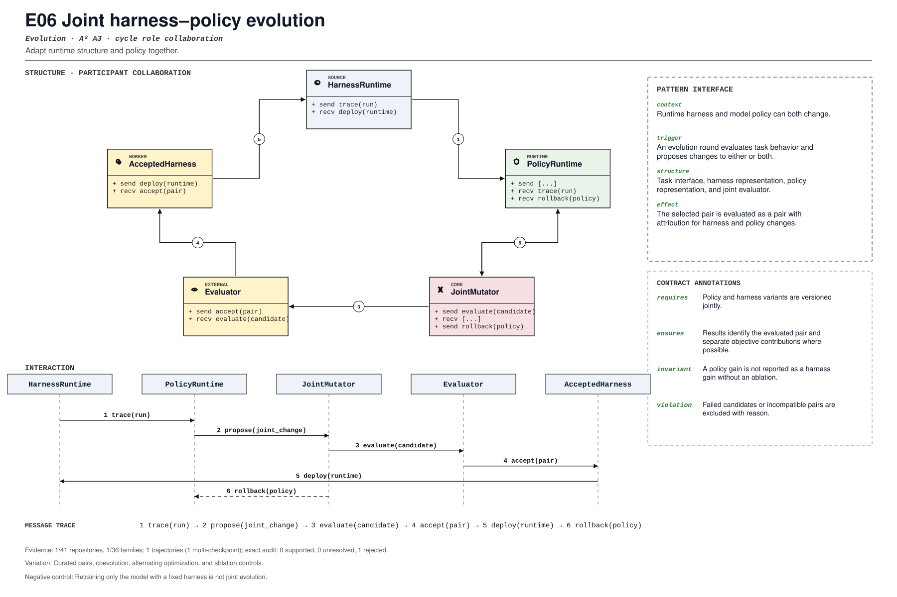

PROMPT SKETCH
Version policy and harness variants as a pair. Every result must identify the evaluated pair, and separate each objective's contribution where the design permits.Adapt runtime structure and policy together.
coadaptive_training_loopRECORD STATUSCandidate · v0.1.0The proposed contract drawn as participant roles, received calls, and numbered dependencies.

The same roles and calls as a class collaboration and a numbered message sequence.

Where the mechanism applies. All four dimensions belong to the proposed match, not just its vocabulary.
The obligation that clients, operators, and auditors should be able to rely on.
Retraining only the model with a fixed harness is not joint evolution.
The hot spot is admitted only where the protected semantics survive.
Curated pairs, coevolution, alternating optimization, and ablation controls.
Test pair compatibility, harness-only, policy-only, joint, and transfer.
Did research move from separate optimization to paired variants?
An illustrative prompt and a small design sketch for the proposed contract. Names and APIs are invented; this is not a repository excerpt.
Version policy and harness variants as a pair. Every result must identify the evaluated pair, and separate each objective's contribution where the design permits.def evaluate_pair(harness, policy, suite):
result = suite.run(harness=harness, policy=policy)
return PairResult(
harness_version=harness.version,
policy_version=policy.version,
metrics=result.metrics,
ablations=suite.ablate(harness, policy),
)Illustrative design sketch. A score without the pair identity cannot support a joint-evolution claim. This example is a teaching aid, not implementation evidence or a conformance claim.
Up to five public files retrieved by the frozen cue and pinned to the audited commit. A match is a place to inspect, not a confirmed implementation.
Each layer answers a different question. Do not substitute retrieval for review.
A concrete source anchor is available for this proposed record. It is one exemplar, not evidence that all repositories—or every contract field—conform.
Review boundary: this candidate and its specification come from an AI-assisted study. Independent human validation remains open.
2.8% of repository families in the frozen panel have at least one current cue, historical cue, or canonical source layer. This is not confirmed prevalence.
Current lexical-cue repositories: 1 / 418bef9488c35aHarnessForge_4B/evolved_pairs/pairs.yaml:1README.md:15Curated harness-policy pairs.
(?i)\b(?:joint[_-]?evolution|evolve\w*\s+(?:harness|policy)|policy[_-]?evolution)\bThis expression is a discovery instrument only. A match is a retrieval cue—not a confirmed implementation, pointcut match, or contract proof.